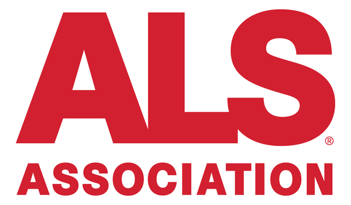
The ALS Association
美国 ALS 协会官方邮件简报：研究、护理、倡导与活动资讯。
汇总渐冻症（ALS / MND）官方组织的邮件订阅入口。点击「订阅邮件」会在新标签页打开对应官网的订阅表单； 本站只做导航，不收集、不存储任何邮箱地址。

美国 ALS 协会官方邮件简报：研究、护理、倡导与活动资讯。
每周 ALS 新闻、研究与患者故事邮件简报（BioNews）。
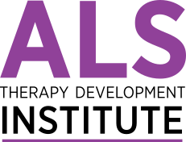
ALS Therapy Development Institute：PeriodicALS 月刊与试验 / 活动更新。
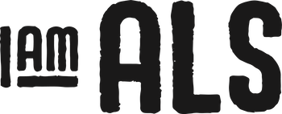
倡导与社区行动简报，每月第一个周六发送。
资助前沿 ALS 科研与治疗策略的非营利组织邮件列表。
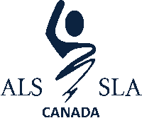
加拿大 ALS 协会：研究、倡导、支持服务与筹款活动更新（首页订阅表单）。
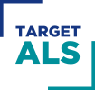
加速 ALS 科研协作与开放资源的基金会社区邮件。
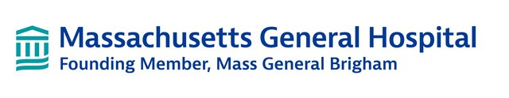
麻省总医院 Healey 中心 ALS Link：平台试验与临床护理更新。
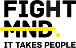
澳大利亚运动神经元病慈善机构；官网页脚可订阅 newsletter。
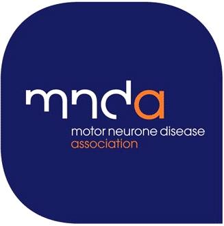
英国运动神经元病协会《The Researcher》研究邮件简报订阅。
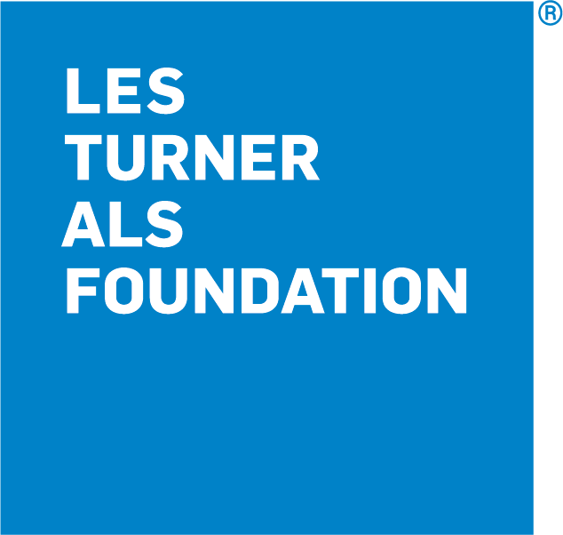
芝加哥 / 中西部 ALS 护理与研究基金会邮件列表（约每月 2–4 封）。
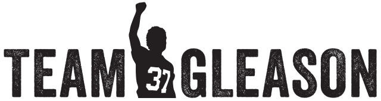
Steve Gleason 创立的 ALS 支持组织：pALS newsletter 与资源更新。
Network for Excellence in ALS：临床试验网络与研究社区邮件列表。
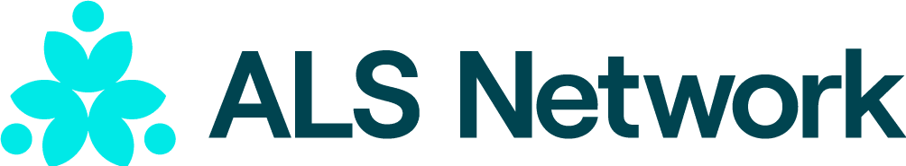
原 ALS Golden West：加州 / 夏威夷地区护理、倡导与月度 eNewsletter。
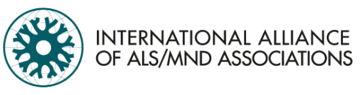
全球 ALS/MND 协会联盟 newsletter 与国际社区更新。
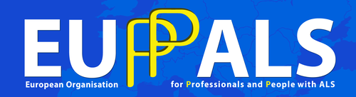
欧洲 ALS 患者组织联盟：季刊 newsletter 与政策 / 研究动态。
Muscular Dystrophy Association：Quest 社区邮件；另有 National ALS Registry 通讯。
约翰霍普金斯 Packard ALS 研究中心：研究更新与季刊 ALS Alert。
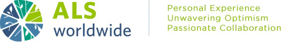
全球 ALS 护理与倡导非营利组织 eNewsletter 订阅（Mailchimp）。
澳大利亚全国性 MND 组织；官网首页邮件订阅表单。
新西兰运动神经元病协会：电子 newsletter 订阅与偏好设置。
新南威尔士州 MND 协会：月度 e-news 订阅表单。
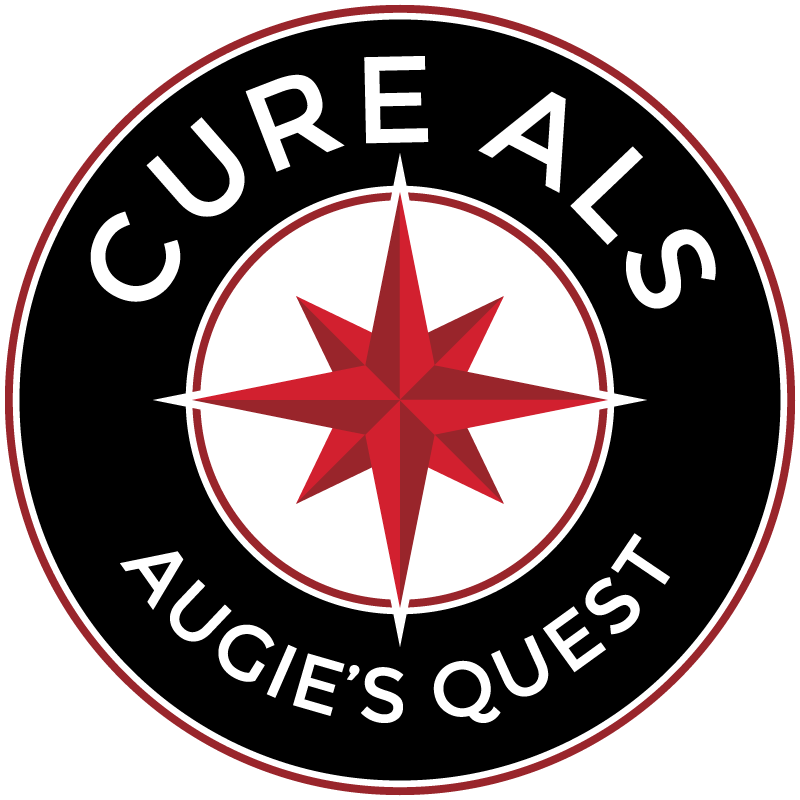
Augie Nieto 创立的 ALS 研究资助组织：官网「Stay in the loop」邮件列表。
患者驱动的 ALS 公民科学与社区平台 newsletter（Brevo / Sendinblue 表单）。